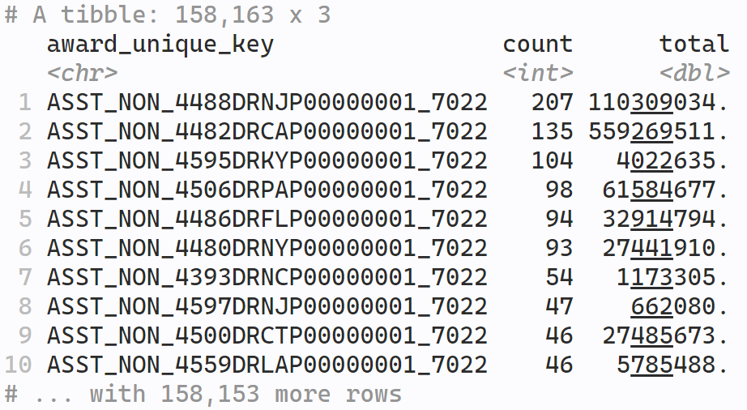

Laying the groundwork for the database and talking about the problem with public data on subsidies as a whole.
Author
Nathan States
Published
February 1, 2023
Congress has awarded over $4 trillion in loans, grants, contracts, or other financial assistance as part of over 70 various COVID-19 related economic relief programs. Currently, there isn’t an easy way to view that data where all that money is going, but I want to change that by building an easily accessible database that makes viewing total and outlay amounts simple.
There are two primary ways we can go about this.
The first is to gather the data manually. Most agencies will let you download records from their websites in .csv format, but others are much more difficult, sometimes offering data in PDFs only. Some agencies don’t provide updates on their award data, and there’s often inconsistencies in how data is stored between agencies. This means tracking outlay amounts are impossible. While this method would give us much more control over how the data is inputted, it would ultimately be too time consuming to be realistic.
The other way is to use the “curated” database from usaspending.gov. You can find it here with accompanying instructions here.
Quick Rant
We live in 2023, in a country of over 330+ million people in it. We all collectively pay taxes, which our representatives then utilize several trillion dollars to give out insured loans, contracts, and award grants. Perhaps I only speak for myself, but such information should be easily available for every citizen to view in simple terms.
An official “government” database didn’t exist until 2007. 2007. It took 2007 to create a database to track subsidies, one of the basic blocks of our economic system!
usaspending.gov was created from this bill, but the original database wasn’t created by the government. It was created by OMB Watch (now named the Project on Government Oversight), who was paid $600,000 to develop the existing database that OMB Watch had already created. To be fair, the article does say that they worked together with the OMB (as in the government agency, Office of Management and Budget), but shouldn’t something this important deserve more funding?
At the very least, OMB Watch is a non-profit. Several government databases are the result of contractual work, often with few bidders. One of the most difficult things when maintaining a database is consistency, making sure columns are filled in correctly, and that APIs / download links are easy and accessible. If you’re a private company, you are disincentivized to care about these issues because they’re irrelevant once the contract is over.
usaspending.gov isn’t directly tracking data, but they’re compiling data from various different agencies. A Senate Permanent Subcommittee on Investigations found that from April-June 2017, 55 percent of the data submitted was inaccurate, incomplete, or both. A recent report by the Government Accountability Office found that agencies are often still slow with reporting data. And of course, data from usaspending.gov still requires a lot of work to use.
This database should be 100x better than what is currently is, and it wouldn’t be that difficult to improve it. The ability to view the parent company has still yet to be implemented; what the hell is that? It’s all very annoying.
Other Data
Alright, with that out of my system…
This database isn’t meant to be solely about subsidies, but to connect them with other relevant economic information that people might want to analyze. In addition to this information, in the future, I’d like to build databases on;
Stock Buybacks: For those unaware, stock buybacks is the practice of a company purchasing shares of their own stock. This reduces the number of shares on the market, which in turn, increases the share price for those already holding it. Prior to 1982, stock buybacks were subjected to harsh scrutiny from the SEC and was generally classified as market manipulation; however, Rule 10b-18 reversed this and made it much easier for large share repurchasing, which companies now devote significant capital to. The practice is controversial; when airline workers were on strike in September 2022, one of their demands was to extend a COVID-19 provision that prohibited airline companies from engaging in stock buybacks, which ultimately did not come to fruition. This information is clearly relevant, and would offer a more comprehensive overview of how companies affect the greater economy.
Wages and Employee Numbers: A sizable portion of aid went towards various payroll support programs to help businesses pay their workers. Different agencies have different formulas for figuring out how much to give each recipient, which is usually calculated based on employment size, average salary, etc., but this data isn’t publicly available, so there’s no real way to determine if funds are distributed equitably or not. Such a database would also allow for tracking company outcomes during and after the pandemic. An October 2020 congressional report found that at least 15 companies had fired or furloughed over 16,500 employees after receiving payroll support.
Legal Violations: Many of the companies who received aid during the pandemic have also been sued for billions of dollars for a variety of infractions, including civil court cases, OSHA incidents, DOJ investigations, etc. Many loans came from some of the largest banks in America, who are also among the most sued companies in the country. For reference, the four largest domestic banks have been sued at least 882 times for over $167 billion since 1995. Rewarding companies who continually break the law is - in my personal opinion - bad, and a database that tracks those violations would allow citizens to see if their tax dollars are going towards responsible corporations.
Other Subsidies: Companies who are already heavily subsidized are arguably less deserving of government aid. Since 2019, you can download a PostgreSQL database from usaspending.gov that contains all subsidy information since FY 2001. However, similar to this COVID-19 dataset, it’s in a format that’s essentially unusable, and requires a lot of work to make use of it.
Gathering the data for these projects will require a ton of additional work, and won’t be completed anytime in the near future. However, I’m laying this out now to consider what schematics this database will have, considering they will all directly relate to each other.
With that out of the way, let’s get the data.
Download Center
Here is a screenshot of the instructions on how to get the data.
There are three different file types to choose from, but as the page describes, File C data “provides a higher degree of granularity in breaking down award spending by several financial data dimensions.” This is because calculating awards given by Congress isn’t as simple as looking at total face amounts, which I’ll explain more when constructing the database.
In total, the download is about 10GB compressed. Uncompressed, the data is spread across 139 Excel files that contain 1,000,000 rows. Excel can’t contain a spreadsheet with over a million rows, and .csv is already incredibly inefficient for analyzing such a large dataset, so we will need some special tools in order to properly analyze it.
Like I said earlier, “curated” database my ass.
Now, you might be thinking to yourself; if each Excel file contains a million rows, and there’s 139 of them, are their really 139,000,000 million loans/grants/contracts related to COVID-19? Not even close. Each row in our data doesn’t represent an individual recipient award, but an updated entry for that recipient award.
Say I were to give you a loan for $10 million, and you were to take $2 million out of the bank. This would show up as two different entries in the database; one for the face loan amount, and one showing the extracted amount, or the award outlay. Now let’s say you pay $100,000 on interest on that loan. Then, it will show up as another entry in the database, but instead, for a negative amount.
This allows us to do two things. For one, we can track how much money has actually been given as opposed to how much has been outlayed. Furthermore, we can do things like calculate whether certain loans were forgiven or not, which is something you can actually already view using the ProPublica database. They got their data directly from the Small Business Administration, but because this database is collected from all other agencies, we can make our own.
Different agencies record data slightly different, so information is not consistent across the database. Here’s the explanation given by usaspending.gov.
In order to understand the data surfaced in the “Award Spending” sections (detailed below), it is important to understand the concept of linking between Broker File C and FPDS/FABS award data. Broker File C serves as a bridge between data sourced from agency financial systems (i.e., the data in Broker File C itself) and award data sourced from FPDS and FABS. The actual link between these two datasets is an award ID (also known as award unique key). For various reasons, not every award ID in Broker File C has a corresponding award ID in FPDS or FABS data, which makes them unmatchable. If a Broker File C row cannot be matched to FPDS or FABS, we call it “unlinked”. Unlinked Broker File C data cannot be supplemented by metadata from FPDS or FABS (including recipient information, CFDA program, and funding agency).
The rule of thumb for all award sections is to use complete Broker File C data where possible (containing both linked and unlinked awards); where not possible, only linked data will be used (representing a subset of the authoritative award spending total based on both linked and unlinked data in Broker File C).
When we analyze the data, we can calculate the number of NAs to see where we are missing most of our information, but basically, it’s not all there.
A Brief Demo
There are some special instructions to make sure that we get the right calculations when crunching the dataset.
Basically, we group by the column, award_unique_key, and use dplyr::summarise to sum obligation and outlay amounts.
Let’s load in one of the files to test this out on. We’ll count the number of entries for each award_unique_key and sum the obligation amount.
Show code
# Reading in the data using Arrow; explained later test <- arrow::read_csv_arrow("test.csv")test %>%group_by(award_unique_key) %>%summarise(count =n(),total =sum(transaction_obligated_amount) ) %>%arrange(desc(count))
Here are the results printed to console.

For reference, there are close to 400,000 rows in the file, but when grouping by award_unique_key, we see that there are only 160,000 unique award keys in our dataset. One of the recipients has over 200 entries for award obligations totaling $110,309,034. For fun, let’s see who the recipient is.
So, the recipient is to the local township of Berkeley Heights, New Jersey, and the award type was a grant. The award is from the Department of Homeland Security, specifically FEMA, for the purpose of the “repair or replacement of disaster damaged facilities.” The original award was handed out on April 8th, 2020, but as we can see, the city is still receiving payments as of recently.
Remember, these amounts were compiled for only one file, but there are 139 of them in total. There are entries scattered across other files, which means there’s no guarantee that Berkeley Heights didn’t receive more in aid in another file. What we need to do is combine all these files together before doing any sort of computations on them.
This is a problem, though. The way R loads data is by storing it into RAM, which means that in order to perform computations on the entire dataset, we’d need about 140GB of RAM. If you’re not sure how much RAM your computer has, there’s a good chance it’s between 4GB - 16GB, and high end computers generally cap out at 64GB. My laptop has 16GB. In other words, even the most powerful commercial computers wouldn’t be able to load the data using base R.
Is this the end? Well, luckily, there are plenty of big data tools that make it possible to load and perform data analysis on massive data sets without the need of external support. While there are many available, I’ll be opting for Apache Arrow, which will be the focus of my next post. Peace.
Source Code
---title: "Building a COVID-19 Economic Relief Database: Part 1 (usaspending.gov)"description: "Laying the groundwork for the database and talking about the problem with public data on subsidies as a whole."author: "Nathan States"date: "02/01/2023"format: html: code-fold: true code-summary: "Show code" toc: true toc-location: right code-tools: true---Congress has awarded over \$4 trillion in loans, grants, contracts, or other financial assistance as part of over 70 various COVID-19 related economic relief programs. Currently, there isn't an easy way to view that data where all that money is going, but I want to change that by building an easily accessible database that makes viewing total and outlay amounts simple. There are two primary ways we can go about this. The first is to gather the data manually. Most agencies will let you download records from their websites in `.csv` format, but others are much more difficult, sometimes offering data in PDFs only. Some agencies don't provide updates on their award data, and there's often inconsistencies in how data is stored between agencies. This means tracking *outlay* amounts are impossible. While this method would give us much more control over how the data is inputted, it would ultimately be too time consuming to be realistic. The other way is to use the "curated" database from [usaspending.gov](https://www.usaspending.gov/). You can find it [here](https://www.usaspending.gov/download_center/custom_account_data) with accompanying instructions [here](https://www.usaspending.gov/disaster/covid-19/data-sources). {.preview-image}## Quick Rant We live in 2023, in a country of over 330+ million people in it. We all collectively pay taxes, which our representatives then utilize several *trillion* dollars to give out insured loans, contracts, and award grants. Perhaps I only speak for myself, but such information should be easily available for every citizen to view in simple terms. An official "government" database didn't exist until 2007. **2007**. It took **2007** to create a database to track *subsidies*, one of the basic blocks of our economic system! *usaspending.gov* was created from [this](https://www.congress.gov/bill/109th-congress/senate-bill/2590) bill, but the original database wasn't created by the government. It was created by *OMB Watch* (now named the Project on Government Oversight), who was [paid \$600,000](https://www.washingtonpost.com/wp-dyn/content/article/2007/12/12/AR2007121202701.html?nav=rss_politics/fedpage) to develop the **existing** database that *OMB Watch* had already created. To be fair, the article does say that they worked together with the OMB (as in the government agency, Office of Management and Budget), but shouldn't something this important deserve more funding? At the very least, *OMB Watch* is a non-profit. Several government databases are the result of contractual work, often with [few bidders](https://www.nytimes.com/2020/07/15/us/politics/coronavirus-database.html). One of the most difficult things when maintaining a database is consistency, making sure columns are filled in correctly, and that APIs / download links are easy and accessible. If you're a private company, you are disincentivized to care about these issues because they're irrelevant once the contract is over. *usaspending.gov* isn't directly tracking data, but they're compiling data from various different agencies. A Senate Permanent Subcommittee on Investigations found that from April-June 2017, 55 percent of the data submitted was inaccurate, incomplete, or both. A [recent report](https://www.gao.gov/blog/usaspending.gov-offers-insight-government-spending-data-quality-and-user-awareness-impact-its-usefulness) by the *Government Accountability Office* found that agencies are often still slow with reporting data. And of course, data from *usaspending.gov* still requires a lot of work to use.This database should be 100x better than what is currently is, and it wouldn't be that difficult to improve it. The ability to view the **parent company** has *still* yet to be implemented; what the hell is that? It's all very annoying. ## Other DataAlright, with that out of my system... This database isn't meant to be solely about subsidies, but to connect them with other relevant economic information that people might want to analyze. In addition to this information, in the future, I'd like to build databases on; * **Stock Buybacks**: For those unaware, stock buybacks is the practice of a company purchasing shares of their own stock. This reduces the number of shares on the market, which in turn, increases the share price for those already holding it. Prior to 1982, stock buybacks were subjected to harsh scrutiny from the SEC and was generally classified as market manipulation; however, [Rule 10b-18](https://www.investopedia.com/terms/r/rule10b18.asp) reversed this and made it much easier for large share repurchasing, [which companies now devote significant capital to](https://hbr.org/2014/09/profits-without-prosperity). The practice is controversial; when airline workers were on strike in [September 2022](https://www.reuters.com/business/aerospace-defense/lawmakers-unions-press-us-airlines-hold-off-stock-buybacks-2022-09-28/), one of their demands was to extend a COVID-19 provision that prohibited airline companies from engaging in stock buybacks, which ultimately did not come to fruition. This information is clearly relevant, and would offer a more comprehensive overview of how companies affect the greater economy. * **Wages and Employee Numbers**: A sizable portion of aid went towards various payroll support programs to help businesses pay their workers. Different agencies have different formulas for figuring out how much to give each recipient, which is usually calculated based on employment size, average salary, etc., but this data isn't publicly available, so there's no real way to determine if funds are distributed equitably or not. Such a database would also allow for tracking company outcomes during and after the pandemic. An [October 2020](https://coronavirus.house.gov/news/press-releases/new-report-shows-treasury-let-aviation-companies-fire-workers-while-reaping) congressional report found that at least 15 companies had fired or furloughed over 16,500 employees after receiving payroll support. * **Legal Violations**: Many of the companies who received aid during the pandemic have also been sued for billions of dollars for a variety of infractions, including civil court cases, OSHA incidents, DOJ investigations, etc. Many loans came from some of the largest banks in America, who are also among the most sued companies in the country. [For reference](https://violationtracker.goodjobsfirst.org/top-100-parents), the four largest domestic banks have been sued *at least* 882 times for over \$167 **b**illion since 1995. Rewarding companies who continually break the law is - in my personal opinion - bad, and a database that tracks those violations would allow citizens to see if their tax dollars are going towards responsible corporations. * **Other Subsidies**: Companies who are already heavily subsidized are arguably less deserving of government aid. **Since 2019, you can download a `PostgreSQL` database from [usaspending.gov](https://files.usaspending.gov/database_download/) that contains all subsidy information since FY 2001**. However, similar to this COVID-19 dataset, it's in a format that's essentially unusable, and requires a lot of work to make use of it. Gathering the data for these projects will require a ton of additional work, and won't be completed anytime in the near future. However, I'm laying this out now to consider what schematics this database will have, considering they will all directly relate to each other. --- With that out of the way, let's get the data. ## Download Center Here is a screenshot of the instructions on how to get the data. There are three different file types to choose from, but as the page describes, File C data "provides a higher degree of granularity in breaking down award spending by several financial data dimensions." This is because calculating awards given by Congress isn't as simple as looking at total face amounts, which I'll explain more when constructing the database. In total, the download is about 10GB **compressed**. Uncompressed, the data is spread across 139 Excel files that contain 1,000,000 rows. Excel can't contain a spreadsheet with over a million rows, and `.csv` is already incredibly inefficient for analyzing such a large dataset, so we will need some special tools in order to properly analyze it. Like I said earlier, "curated" database my ass. Now, you might be thinking to yourself; if each Excel file contains a million rows, and there's 139 of them, are their *really* 139,000,000 million loans/grants/contracts related to COVID-19? **Not even close**. Each row in our data doesn't represent an individual *recipient award*, but an *updated entry* for that recipient award. Say I were to give you a loan for \$10 million, and you were to take \$2 million out of the bank. This would show up as two different entries in the database; one for the face loan amount, and one showing the extracted amount, or the **award outlay**. Now let's say you pay \$100,000 on interest on that loan. Then, it will show up as another entry in the database, but instead, for a negative amount. This allows us to do two things. For one, we can track how much money has actually been *given* as opposed to how much has been *outlayed*. Furthermore, we can do things like calculate whether certain loans were forgiven or not, which is something you can actually already view using the [*ProPublica* database](https://projects.propublica.org/coronavirus/bailouts/). They got their data directly from the Small Business Administration, but because this database is collected from all other agencies, we can make our own. Different agencies record data slightly different, so information is not consistent across the database. Here's the explanation given by *usaspending.gov*.> In order to understand the data surfaced in the "Award Spending" sections (detailed below), it is important to understand the concept of **linking between Broker File C and FPDS/FABS award data**. Broker File C serves as a bridge between data sourced from agency financial systems (i.e., the data in Broker File C itself) and award data sourced from FPDS and FABS. **The actual link between these two datasets is an award ID** (also known as *award unique key*). For various reasons, not every award ID in Broker File C has a corresponding award ID in FPDS or FABS data, which makes them unmatchable. If a Broker File C row cannot be matched to FPDS or FABS, we call it "unlinked". Unlinked Broker File C data cannot be supplemented by metadata from FPDS or FABS (including recipient information, CFDA program, and funding agency).>> **The rule of thumb for all award sections is to use complete Broker File C data where possible (containing both linked and unlinked awards); where not possible, only linked data will be used (representing a subset of the authoritative award spending total based on both linked and unlinked data in Broker File C)**.When we analyze the data, we can calculate the number of `NAs` to see where we are missing most of our information, but basically, it's not all there. ### A Brief DemoThere are some special instructions to make sure that we get the right calculations when crunching the dataset. Basically, we group by the column, `award_unique_key`, and use `dplyr::summarise` to sum obligation and outlay amounts. Let's load in one of the files to test this out on. We'll count the number of entries for each `award_unique_key` and sum the obligation amount.```{r, eval=FALSE}# Reading in the data using Arrow; explained later test <- arrow::read_csv_arrow("test.csv")test %>%group_by(award_unique_key) %>%summarise(count =n(),total =sum(transaction_obligated_amount) ) %>%arrange(desc(count))```Here are the results printed to console. For reference, there are close to 400,000 rows in the file, but when grouping by `award_unique_key`, we see that there are only 160,000 unique award keys in our dataset. One of the recipients has over 200 entries for award obligations totaling \$110,309,034. For fun, let's see who the recipient is. ```{r, eval=FALSE}test %>%filter(award_unique_key =="ASST_NON_4488DRNJP00000001_7022") %>%group_by(award_unique_key) %>%summarise(Recipient =unique(recipient_parent_name),State =unique(recipient_state),Award_Category =unique(award_type),Obligations =sum(transaction_obligated_amount),Agency =unique(awarding_agency_name),Description =unique(prime_award_base_transaction_description),Last_Modified =unique(award_latest_action_date) )```This results in a 1x1 tibble.:::{.column-page}:::So, the recipient is to the local township of Berkeley Heights, New Jersey, and the award type was a grant. The award is from the Department of Homeland Security, specifically FEMA, for the purpose of the "repair or replacement of disaster damaged facilities." The original award was handed out on April 8th, 2020, but as we can see, the city is still receiving payments as of recently. Remember, these amounts were compiled for only one file, but there are **139** of them in total. There are entries scattered across other files, which means there's no guarantee that Berkeley Heights didn't receive more in aid in another file. What we need to do is combine all these files together before doing any sort of computations on them. This is a problem, though. The way `R` loads data is by storing it into RAM, which means that in order to perform computations on the entire dataset, we'd need about 140GB of RAM. If you're not sure how much RAM your computer has, there's a good chance it's between 4GB - 16GB, and high end computers generally cap out at 64GB. My laptop has 16GB. In other words, even the most powerful commercial computers wouldn't be able to load the data using base `R`. Is this the end? Well, luckily, there are plenty of big data tools that make it possible to load and perform data analysis on massive data sets without the need of external support. While there are many available, I'll be opting for **Apache Arrow**, which will be the focus of my next post. Peace.